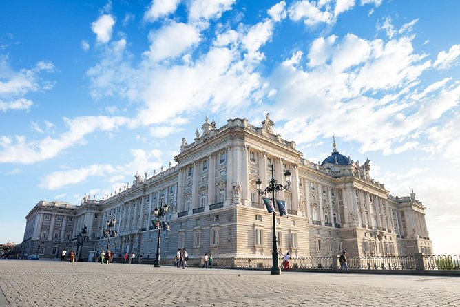
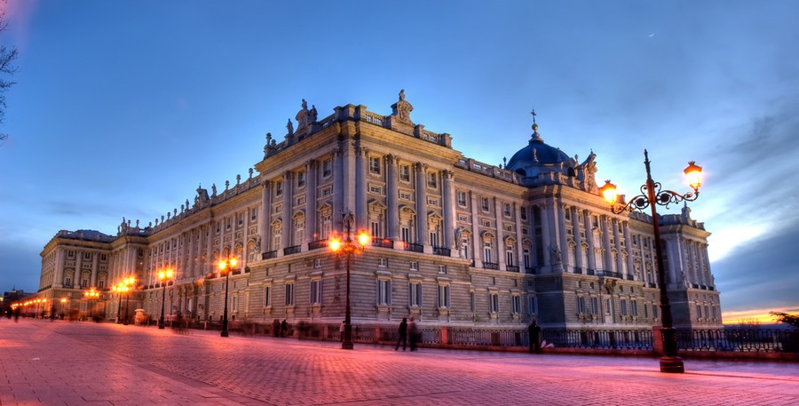

Long before Madrid became the capital of Spain, Emir Mohamed I chose Magerit (the city's Arabic name) as the site for a fortress to protect Toledo from the advancing Christians. The building was eventually used by the Kings of Castille until finally becoming what would be known as the Antiguo Alcázar (Old Fortress) in the 14th century. Charles I and his son Philip II turned the building into a permanent residence for the Spanish royal family. However, in 1734 a fire burnt the Palace of Los Austrias to the ground, and Philip V ordered the construction of the palace that stands today. Following the untimely death of Filippo Juvara, the architect originally commissioned to design the palace, it was his pupil Juan Bautista Sachetti who eventually drew up the final plans. Seventeen years passed between the laying of the first stone in 1738 and final completion of the work commissioned by Philip V. However, it was Charles III (known as the "Mayor of Madrid" due to the large number of reforms and initiatives that he undertook in the city) who became the first monarch to occupy the new building. His successors Charles IV (responsible for the creation of the Hall of Mirrors) and Ferdinand VII added many decorative details and furnishings, such as clocks, items of furniture and chandeliers.
the palace, inspired by sketches made by Bernini for the construction of the Louvre in Paris, is built in the form of a square and looks out over a large courtyard with galleries and a parade ground. The decoration of the palace's rooms and their layout has gradually changed over the years as the building has been adapted to suit the needs of its residents. It comprises over 3000 rooms, including: the Main Staircase, designed by Sabatini with over 70 steps; the Throne Hall featuring a ceiling painted by Tiepolo; the Hall of Halberdiers, which Charles III turned into the Guards Room; the Gasparini Room, with its grand 18th century decoration on a floral theme; the Royal Chemist's with natural medicine cabinets, ceramic pots made by the La Granja factory, and even prescriptions given to members of the royal family; and the Royal Chapel, which is home to a collection of string instruments made by the legendary Antonio Stradivari.
